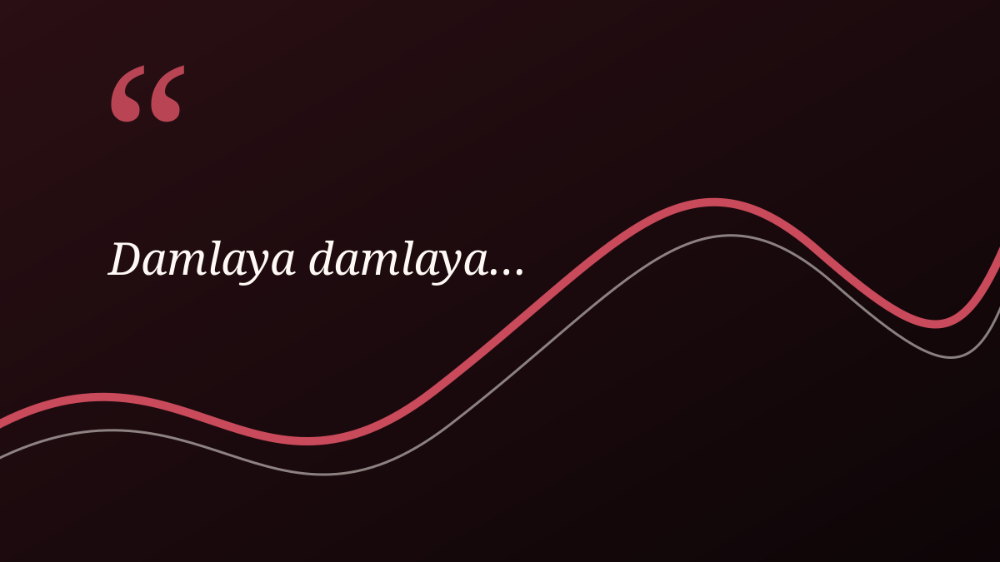

Frogier
3D action-platformer for browser and mobile: 100 levels, 5 biomes and boss fights.
Play — FrogierDetails
Independent technology studio
Independent by nature. Built through code.
Runia0 is an independent studio focused on turning ideas in software, AI and games into products that work.
3D action-platformer for browser and mobile: 100 levels, 5 biomes and boss fights.
Play — FrogierDetails

Story-driven 3D sniper game: 5 missions, realistic ballistics and weapon upgrades.
Play — Shadow ProtocolDetails

Original 3D family-and-crime drama set in a fictional Adana neighbourhood, where choices decide the ending.
Play — Sokakların KanunuDetails

Game images are real in-game screenshots; the İplik image is illustrative.
Desktop, web, mobile and backend applications.
AI services, assistants and integrations.
3D games, game mechanics, prototypes and gameplay code.
From idea to store: packaging, promotion, release.
Reduce the idea to a one-sentence goal and a clear scope.
Ship a playable or usable version as early as possible.
Automated browser tests, screenshot checks and debugging.
Packaging, build pipelines, store listings and promo material.
Runia0 openly uses AI as part of its development process: code generation, test automation and promotional material are produced together with AI tools, while product decisions, design direction and quality control stay with the studio.
Frogier, Shadow Protocol, Sokakların Kanunu, NIGHT SHIFT and Hicaz Studio added to the site, playable in the browser.
runia0-site went live on GitHub Pages; İplik's Android version was prepared.
Hicaz Studio sound experiment completed.
Shadow Protocol expanded to 5 missions; promo videos produced.
Sokakların Kanunu reached a playable build and a trailer.
Frogier: 100 levels, boss fights, story mode and Android build pipeline.
MATLAB teaching tool built.
İplik's Firebase-based web version completed.
Berat Çetin
Founder & Independent Developer at Runia0
Software Development · Artificial Intelligence · Game Development · Digital Products.